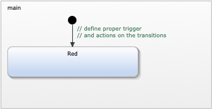

Exercise 1
Basic Traffic Light
In this exercise you will model and simulate a statechart of a basic traffic light.

Requirements
The traffic light statechart must implement the follwoing requirements:
- R1: three differently coloured lights: red (R), green (G), yellow (Y)
- R2: at most one light is on at any point in time
- R3: at system start-up, the red light is on
- R4: cycles through red on, green on, and yellow on
- R5: red is on for 60s, green is on for 55s, yellow is on for 5s
Extend the statechart
You have to extend the prepared statechart using the YAKINDU statechart editor.
- Open the statechart TrafficLight.sct by double-clicking the file in the project explorer.
- Follow the hints which are provided as comments in the model and add states, transitions, and declarations.
- Define trigger and actions on the transition. Remember the syntax is 'trigger / action'
- Use time trigger (e.g. after 10s).
- Hint: Try Ctrl-Space when editing text to get proposals.
Simulate the statechart
Any time while modeling you can run the simulation to check if everything is working
according to the requirements. Simply right-click in the model and choose 'Run As > Statechart Simulation'
from the context menu. You can even edit the statechart durin simulation. When you save the changes you will
be asked to twerminate or restart the simulation.